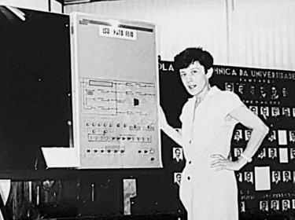
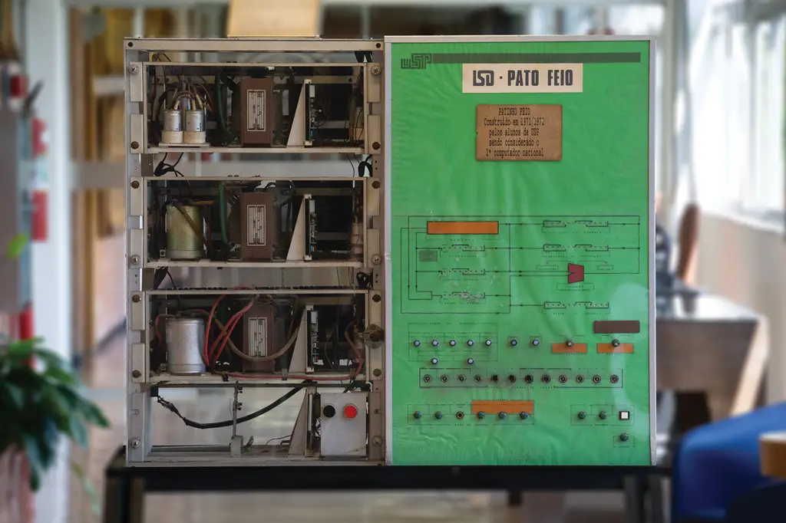

Edith Ranzini: A Pioneira da Computação Brasileira
Edith Ranzini (São Paulo, 1946) é uma engenheira eletricista, pesquisadora e professora brasileira reconhecida como uma das figuras mais importantes da história da tecnologia no Brasil. Graduada pela Escola Politécnica da Universidade de São Paulo (Poli-USP) em 1969, tornou-se Professora Doutora da Pontifícia Universidade Católica de São Paulo (PUC-SP) e Professora Emérita da USP.
Sua atuação acadêmica e profissional ajudou a estruturar as áreas de inteligência artificial, engenharia de computação, redes neurais e sistemas gráficos no país.
O Contexto Histórico e a Trajetória Acadêmica
Na década de 1960, a computação como curso acadêmico ainda não existia no Brasil e a eletrônica baseava-se em válvulas. Em 1970, o professor Antônio Hélio Guerra Vieira idealizou o chamado “Currículo 70” na Poli-USP, dividindo a graduação em Engenharia Elétrica para criar uma ênfase inédita em sistemas digitais.
Como não havia professores formados nessa área, a universidade convocou recém-graduados promissores. Foi assim que Edith ingressou no Laboratório de Sistemas Digitais (LSD).
Entre 1971 e 1975, enquanto realizava seu mestrado em Engenharia de Sistemas, Edith participou ativamente do desenvolvimento de dois marcos tecnológicos nacionais:
O Computador Patinho Feio

O Patinho Feio (1971–1972)
O primeiro computador totalmente projetado e construído no Brasil. A equipe lidou com a escassez de recursos criando placas de circuito com papelão e plástico. O projeto serviu de trabalho final em um curso de pós-graduação ministrado por um professor norte-americano convidado.
O G10 (1973–1975)
O primeiro computador nacional de médio porte, feito sob demanda para a Marinha e o governo federal, que lançou os alicerces para a criação da primeira fabricante estatal de computadores, a COBRA S/A. No G10, o subsistema de memória foi projetado inteiramente pela equipe liderada por Edith.
O Legado Técnico do Patinho Feio
O Patinho Feio era uma máquina que pesava cerca de 100 quilos e media aproximadamente um metro de altura por um metro de comprimento. Não possuía os recursos visuais de hoje: a interação era feita por chaves mecânicas e botões no painel frontal, e os resultados eram impressos em papel.
Tinha apenas 4 kilobytes (KB) de memória. O grande diferencial do projeto foi a técnica de montagem. Edith Ranzini e seus colegas literalmente ajudaram a tecer à mão fios de cobre através de minúsculos anéis magnéticos para construir a memória de núcleo de ferrite da máquina.
Ele operava com cerca de 450 pastilhas de circuitos integrados e era programado em linguagem assembly. O sucesso do protótipo provou que o Brasil tinha capacidade de formar cientistas para criar tecnologia própria e impulsionou a informatização do sistema bancário nacional nas décadas seguintes.
Liderança Institucional e Reconhecimentos
Além do trabalho de engenharia, Edith teve papel de destaque na gestão tecnológica e na inclusão de mulheres nas ciências exatas. Em 1972, ela foi a única mulher no grupo de engenheiros instituidores da Fundação para o Desenvolvimento Tecnológico da Engenharia (FDTE), entidade da qual foi diretora-presidente entre 2004 e 2006.
Seu impacto na educação de gerações de engenheiros rendeu-lhe homenagens históricas:
2004 — Prêmio de Melhor Trabalho
Recebeu o Prêmio de Melhor Trabalho na área de Ciências Exatas e da Terra no programa de iniciação científica (CEPE/PUC-SP).
2013 — Professora Mais Querida
Foi eleita a Professora Mais Querida do Departamento de Engenharia de Computação e Sistemas Digitais (PCS) no livro de 120 anos da Poli.
2016 — Professora do Ano
Recebeu o título máximo de Professora do Ano concedido pela Associação dos Engenheiros Politécnicos (AEP), coroando mais de cinco décadas dedicadas ao ensino técnico e à soberania digital do país.